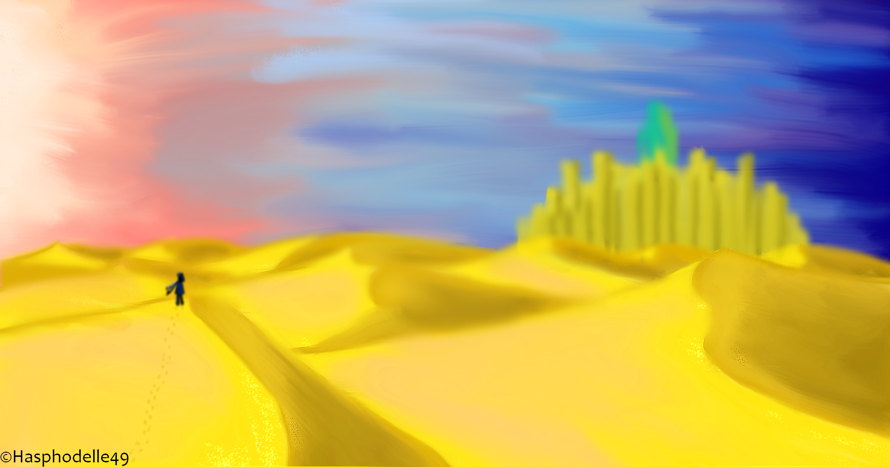

Little adventuress


Je classe ici avec une petite histoire pour chacun, mes dessins, réalisés à l'aide, pour certains, du logiciel Sketchbook pour les premiers, et plus récemment, je suis passée sur le logiciel Krita. Je dessine sur le numérique à l'aide d'une tablette graphique Huion H610 pro, directement reliée à mon ordinateur portable.

Le blason de Saguaro, est l'une des représentations issues de l'histoire de Blue Bird que j'ai réalisée
Un autre dessin issu du même univers de Blue Bird, représentant le désert de Saguaro, et en fond, sa capitale, "Saguaria Centrale"
Pour comprendre la plupart de mes dessins, il faut s'intéresser à cette partie, étant donné que beaucoup d'illustrations puisent leur source dans mon écriture.
Depuis maintenant longtemps, j'invente constamment des histoires, inspirées particulièrement par de nombreuses oeuvres littéraires ou
cinématographiques, connues plus ou moins.
Depuis que mes histoires se font plus concrètes malgré les diverses modifications que j'y apporte à longueur de temps, j'ai souhaité de plus en plus illustrer mes idées en réalisant
au moins les personnages, les coeurs battants de mon imagination.
Une classe se retrouve après une longue et étrange séparation à bord d’un vaisseau extraterrestre. Persuadés que la Terre est détruite, ils vivent tant bien que de mal leur nouvelle vie surveillée de près.
La plupart de leurs faits et gestes sont observés. Ils ne savent rien de ce qu’il se passe en dehors du vaisseau, et sont plus solidaires que jamais.
Mais une seule élève n’est plus pareille. Quelque chose l’a changée. Avant, elle était souriante, joyeuse, maintenant, elle n’est plus qu’un visage blanc comme le marbre n’affichant plus aucune expressions. Restant muette face aux questions et à l’inquiétude de ses camarade, elle reste à l’écart, fascinée par l’immensité de l’espace que le vaisseau sillonne…

Dans notre monde, un établissement scolaire se démarque des autres. Connu pour abriter les enfants de magiciens, ainsi que certains nommés Voyageurs, il forme ces jeunes gens aux périples de la vie lorsque l’on possède des pouvoirs. Ce monde magique, est régit par quatre clans, dont celui des Abysses est le chef suprême. Chaque clan possède une famille, qui instaure ses lois et ses mœurs aux autres du clan. La famille de Beaulieu est la famille régente du clan des Abysses, ainsi que de cet univers de magie. Ils supervisent deux établissements de magie, dont un lycée situé à Saumur, composé de magiciens et de sans-magie. Un établissement mixte.
Loin de là, dans d’autres époques, vagabondes illégalement une bande de gamins surmontés tous de la même casquette, et semblent tout droit sortis d’une vieille usine. C’est le cas. Pendant la première partie du XXe siècle, en pleine révolution industrielles, ils se sont fondus au sein de la population, et travaillaient dans une grande usine réputée de la ville de Londres.
Parmi eux, la seule jeune fille du groupe, à l’aube de ses dix-sept ans, possède la magie du voyage temporel, mais également d’autres pouvoirs, supposés être référencés, dans l’ordre des choses. Les régisseurs de la magie ne souhaitent pas d’écart, et Eléonore en fait constamment, menaçant parfois l’ordre logique des choses. Alors qu’elle est recherchée dans toutes les époques, la jeune fille décide de se jeter dans la gueule du loup et d’intégrer le lycée de magie de Saumur. Elle se considérera alors plus maligne que les autres, sachant certaines choses, supposées disparues depuis longtemps…